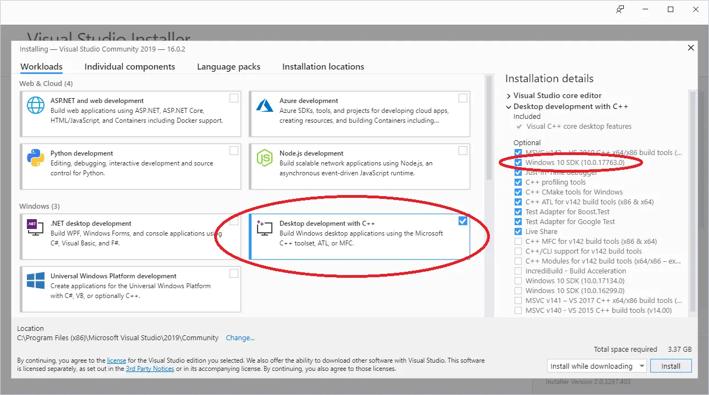
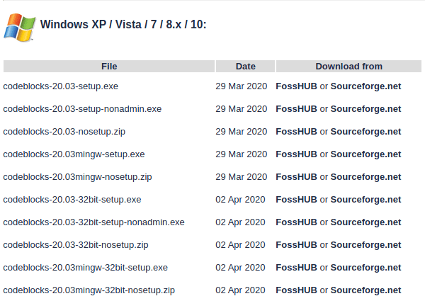
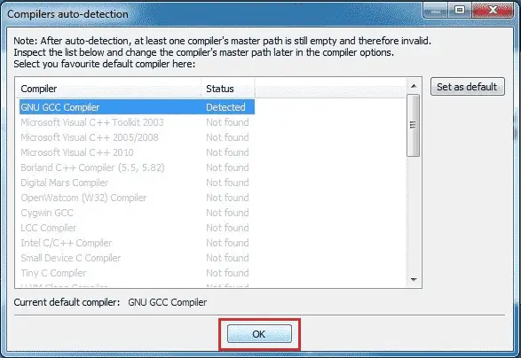

0.6 — Installer un environnement de développement intégré (IDE)
Un environnement de développement intégré (IDE, Integrated Development Environment) est un logiciel conçu pour faciliter le développement, la compilation et le débogage de vos programmes.
Un IDE moderne comprend généralement :
- Un moyen simple de charger et d'enregistrer vos fichiers de code.
- Un éditeur de code doté de fonctionnalités adaptées à la programmation, comme la numérotation des lignes, la coloration syntaxique, l'aide intégrée, la complétion des noms et la mise en forme automatique du code source.
- Un système de compilation de base, qui vous permet de compiler et d'éditer les liens de votre programme pour obtenir un exécutable, puis de l'exécuter.
- Un débogueur intégré, qui facilite la recherche et la correction des défauts logiciels.
- Un moyen d'installer des extensions (plugins), afin de modifier l'IDE ou d'ajouter des fonctionnalités, comme la gestion de versions.
Certains IDE C++ installent et configurent automatiquement un compilateur C++ et un éditeur de liens (linker). D'autres vous permettent d'utiliser le compilateur et l'éditeur de liens de votre choix, installés séparément.
Vous pourriez faire toutes ces opérations séparément, mais il est bien plus simple d'installer un IDE et de tout faire depuis une interface unique.
Alors, installons-en un !
Choisir un IDE
La question qui vient naturellement à l'esprit est : « lequel ? ». De nombreux IDE sont gratuits, et vous pouvez en installer plusieurs si vous souhaitez en essayer davantage. Nous vous recommandons ci-dessous quelques-uns de nos favoris.
Si vous avez en tête un autre IDE, c'est tout à fait acceptable. Les concepts présentés dans ces tutoriels devraient généralement fonctionner avec tout IDE moderne correct. Cependant, les différents IDE utilisent des noms, des dispositions et des raccourcis clavier différents. Vous devrez donc peut-être chercher un peu dans votre IDE pour trouver les fonctionnalités équivalentes.
Conseil
Pour tirer le meilleur parti de ce site, nous vous recommandons d'installer un IDE livré avec un compilateur prenant en charge au minimum C++17.
Si vous êtes contraint d'utiliser un compilateur qui ne prend en charge que C++14 (pour des raisons pédagogiques ou professionnelles), de nombreuses leçons et de nombreux exemples fonctionneront tout de même. Cependant, si vous rencontrez une leçon qui utilise des fonctionnalités de C++17 (ou plus récent) et que vous employez un compilateur plus ancien, vous devrez la passer ou l'adapter à votre version, ce qui peut être plus ou moins facile.
Vous ne devriez pas utiliser de compilateur qui ne prend pas en charge au minimum C++11 (considéré en général comme le minimum moderne pour C++).
Nous recommandons d'installer la version la plus récente d'un compilateur. Si vous ne pouvez pas utiliser la version la plus récente, voici les versions minimales absolues des compilateurs prenant en charge C++17 :
- GCC/G++ 7
- Clang++ 8
- Visual Studio 2017 15.7
Visual Studio (pour Windows)
Si vous développez sur une machine Windows 10 ou 11, nous vous recommandons vivement de télécharger Visual Studio 2022 Community.
Une fois l'installateur lancé, vous arriverez à un écran vous demandant quelle charge de travail (workload) installer. Choisissez Développement Desktop en C++ (Desktop development with C++). Si vous ne le faites pas, les fonctionnalités C++ ne seront pas disponibles.
Les options par défaut sélectionnées sur le côté droit de l'écran devraient convenir, mais vérifiez que le SDK Windows 11 (ou le SDK Windows 10 si c'est le seul disponible) est bien sélectionné. Les applications créées avec le SDK Windows 11 peuvent s'exécuter sous Windows 10.

Code::Blocks (pour Linux ou Windows)
Si vous développez sous Linux (ou sous Windows mais souhaitez écrire des programmes faciles à porter sous Linux), nous vous recommandons Code::Blocks. Code::Blocks est un IDE gratuit, open source et multiplateforme, qui fonctionne sous Linux comme sous Windows.
Pour les utilisateurs de Windows
Assurez-vous de récupérer la version de Code::Blocks qui inclut MinGW (il s'agit de celle dont le nom de fichier se termine par mingw-setup.exe). Cela installera MinGW, qui contient un portage Windows du compilateur C++ GCC :

Code::Blocks 20.03 est livré avec une version obsolète de MinGW, qui ne prend en charge que C++17 (soit une version en retard par rapport à la dernière version de C++). Si vous voulez utiliser la dernière version de C++ (C++20), vous devrez mettre MinGW à jour. Pour cela, suivez la procédure suivante :
- Installez Code::Blocks comme indiqué ci-dessus.
- Fermez Code::Blocks s'il est ouvert.
- Ouvrez l'Explorateur de fichiers Windows (raccourci clavier Win-E).
- Accédez au répertoire d'installation de Code::Blocks (probablement C:\Program Files (x86)\CodeBlocks).
- Renommez le répertoire « MinGW » en « MinGW.bak » (au cas où quelque chose tournerait mal).
- Ouvrez un navigateur et rendez-vous sur https://winlibs.com/.
- Téléchargez une version à jour de MinGW-w64. Vous voudrez probablement celle située sous Release Versions -> UCRT Runtime -> LATEST -> Win64 -> without LLVM/Clang/LLD/LLDB -> Zip archive.
- Extrayez le dossier « mingw64 » dans le répertoire d'installation de Code::Blocks.
- Renommez « mingw64 » en « MinGW ».
Une fois que vous avez confirmé que le compilateur mis à jour fonctionne, vous pouvez supprimer l'ancien dossier (« MinGW.bak »).
Pour les utilisateurs de Linux
Certaines installations Linux peuvent manquer de dépendances nécessaires pour exécuter ou compiler des programmes avec Code::Blocks.
Les utilisateurs de distributions basées sur Debian (comme Mint ou Ubuntu) devront peut-être installer le paquet build-essential. Pour cela, depuis le terminal, tapez : sudo apt-get install build-essential.
Les utilisateurs d'Arch Linux devront peut-être installer le paquet base-devel.
Les utilisateurs des autres variantes de Linux devront déterminer quel est leur gestionnaire de paquets et quels sont les paquets équivalents.
Lors du premier lancement de Code::Blocks, il est possible qu'une boîte de dialogue Détection automatique des compilateurs (Compilers auto-detection) apparaisse. Si c'est le cas, assurez-vous que GNU GCC Compiler est défini comme compilateur par défaut, puis cliquez sur le bouton OK.

Q : Que faire si j'obtiens l'erreur « Can't find compiler executable in your configured search paths for GNU GCC Compiler » ?
Essayez les étapes suivantes :
- Si vous êtes sous Windows, assurez-vous d'avoir téléchargé la version de Code::Blocks AVEC MinGW. C'est celle qui contient « mingw » dans son nom.
- Essayez d'aller dans Settings (Paramètres), Compiler, puis choisissez « reset to defaults » (rétablir les valeurs par défaut).
- Essayez d'aller dans Settings, Compiler, onglet toolchain executables, et vérifiez que « Compiler's installation directory » (répertoire d'installation du compilateur) est défini sur le répertoire MinGW (par exemple C:\Program Files (x86)\CodeBlocks\MinGW).
- Essayez de désinstaller complètement, puis de réinstaller.
- Essayez un autre compilateur.
Visual Studio Code (pour les utilisateurs expérimentés de Linux, macOS ou Windows)
Visual Studio Code (appelé aussi « VS Code », à ne pas confondre avec le produit au nom voisin « Visual Studio Community ») est un éditeur de code très prisé des développeurs expérimentés, car il est rapide, flexible, open source, compatible avec de nombreux langages de programmation et disponible sur de nombreuses plateformes.
Son inconvénient est que VS Code est bien plus difficile à configurer correctement que les autres choix de cette liste (et, sous Windows, plus difficile à installer également). Avant de continuer, nous vous recommandons de lire les documents d'installation et de configuration liés ci-dessous, afin de vous assurer que vous comprenez les étapes à suivre et que vous êtes à l'aise avec elles.
Attention
Cette série de tutoriels ne contient pas d'instructions complètes pour VS Code.
Visual Studio Code n'est pas une bonne option pour les débutants en C++, et des lecteurs ont signalé de nombreuses difficultés pour installer et configurer correctement Visual Studio Code pour C++.
Ne choisissez pas cette option, sauf si vous connaissez déjà Visual Studio Code pour l'avoir utilisé, ou si vous avez de l'expérience dans la résolution de problèmes de configuration.
Nous ne pouvons pas fournir d'aide à l'installation ni à la configuration de Visual Studio Code sur ce site.
Un grand merci à l'utilisateur glibg10b, qui a fourni une première version des instructions pour VS Code réparties sur plusieurs articles.
Pour les utilisateurs de Linux
VS Code doit être téléchargé à l'aide du gestionnaire de paquets de votre distribution. Les instructions VS Code pour Linux expliquent comment procéder pour les différentes distributions Linux.
Une fois VS Code installé, suivez les instructions de configuration de C++ pour Linux.
Pour les utilisateurs de Mac
Les instructions VS Code pour Mac détaillent comment installer et configurer VS Code sous macOS.
Une fois VS Code installé, suivez les instructions de configuration de C++ pour Mac.
Pour les utilisateurs de Windows
Les instructions VS Code pour Windows détaillent comment installer et configurer VS Code sous Windows.
Une fois VS Code installé, suivez les instructions de configuration de C++ pour Windows.
Autres IDE pour macOS
Parmi les autres choix populaires sur Mac, on trouve Xcode (si vous y avez accès) et l'éditeur de code Eclipse. Eclipse n'est pas configuré par défaut pour C++, et vous devrez installer les composants C++ optionnels.
Autres compilateurs ou plateformes
Q : Puis-je utiliser un compilateur en ligne ?
Oui, pour certaines choses. Pendant le téléchargement de votre IDE (ou si vous n'êtes pas encore certain de vouloir en installer un), vous pouvez poursuivre ce tutoriel à l'aide d'un compilateur en ligne. Nous vous recommandons l'un des suivants :
- TutorialsPoint
- Wandbox (permet de choisir différentes versions de GCC ou de Clang)
- Godbolt (permet de voir l'assembleur)
Les compilateurs en ligne conviennent pour s'essayer à la programmation et pour de simples exercices. Cependant, ils sont généralement assez limités : beaucoup ne permettent pas de créer plusieurs fichiers ni de déboguer efficacement vos programmes, et la plupart ne prennent pas en charge les saisies interactives. Vous voudrez passer à un IDE complet dès que possible.
Q : Puis-je utiliser un compilateur en ligne de commande (par exemple g++ sous Linux) ?
Oui, mais nous ne le recommandons pas aux débutants. Vous devrez trouver votre propre éditeur et apprendre à l'utiliser ailleurs. Apprendre à utiliser un débogueur en ligne de commande est moins simple qu'un débogueur intégré, et rendra le débogage de vos programmes plus difficile.
Q : Puis-je utiliser d'autres éditeurs de code ou IDE, comme Eclipse, Sublime ou Notepad++ ?
Oui, mais nous ne le recommandons pas aux débutants. Il existe de nombreux excellents éditeurs de code et IDE qui peuvent être configurés pour prendre en charge une grande variété de langages, et qui vous permettent de combiner les extensions à votre guise pour personnaliser votre expérience. Cependant, beaucoup de ces éditeurs et IDE nécessitent une configuration supplémentaire pour compiler des programmes C++, et bien des choses peuvent mal tourner pendant ce processus. Pour les débutants, nous recommandons une solution qui fonctionne directement, afin que vous passiez plus de temps à apprendre à programmer et moins de temps à comprendre pourquoi votre éditeur de code ne fonctionne pas correctement avec votre compilateur ou votre débogueur.
IDE à éviter
Vous devriez éviter complètement les IDE suivants, car ils ne prennent pas en charge au minimum C++11, ne prennent pas du tout en charge C++, ou ne sont plus activement maintenus ou supportés :
- Borland Turbo C++ : ne prend pas en charge C++11
- Visual Studio pour Mac : ne prend pas en charge C++. (Remarque : il s'agit d'un produit différent de VS Code.)
- Dev C++ : plus activement supporté
Il n'existe aucune bonne raison d'utiliser un compilateur obsolète ou non supporté, alors que des alternatives légères et gratuites prenant en charge le C++ moderne existent.
Quand les choses tournent mal (ou quand IDE signifie « Je n'y comprends rien... »)
Les installations d'IDE posent leur lot de problèmes. L'installation peut échouer complètement (ou réussir, mais l'IDE peut poser problème lors de son utilisation à cause d'un problème de configuration). Si vous rencontrez de tels problèmes, essayez de désinstaller l'IDE (en supposant qu'il ait bien été installé), redémarrez votre machine, désactivez temporairement votre antivirus ou votre logiciel anti-malware, puis recommencez l'installation.
Si vous rencontrez encore des problèmes à ce stade, vous avez deux options. La plus simple consiste à essayer un autre IDE. L'autre option est de résoudre le problème. Malheureusement, les causes des erreurs d'installation et de configuration sont variées et propres au logiciel de l'IDE lui-même, et nous ne sommes pas en mesure de vous conseiller efficacement sur la manière de résoudre ces problèmes. Dans ce cas, nous vous recommandons de copier le message d'erreur ou le problème rencontré dans votre moteur de recherche préféré (comme Google ou DuckDuckGo) et de chercher un message sur un forum, rédigé ailleurs par quelqu'un qui a sans doute rencontré le même problème. Il y a souvent des suggestions de solutions à essayer.
La suite
Une fois votre IDE installé (ce qui peut être l'étape la plus ardue si les choses ne se passent pas comme prévu), ou si vous continuez provisoirement avec un compilateur en ligne, vous êtes prêt à écrire votre premier programme !
Source originale : https://www.learncpp.com/cpp-tutorial/installing-an-integrated-development-environment-ide/